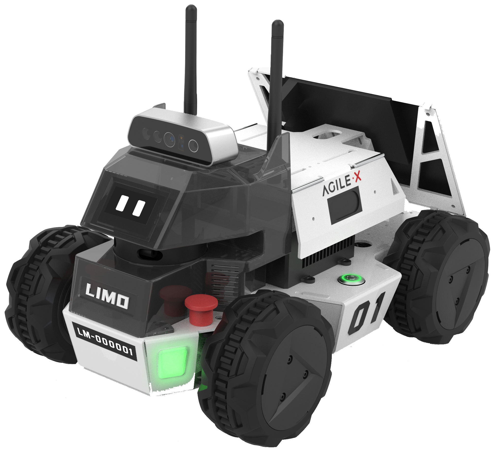

AgileX LIMO
The AgileX Robotics LIMO is a ROS development and learning platform that integrates four steering modes and comes pre-installed with plenty of demos and examples. LIMO is a perfect platform for robot education, research and development, and can serve as a model for industrial applications. With its innovative mechanical design, LIMO can quickly switch its steering mode between four-wheel differential, Ackermann, tracked, and Mecanum. The LIMO is equipped with an NVIDIA Jetson Nano, an EAI XL2 LiDAR, an ORBBEC Dabai stereo depth camera, and a suite of other sensors which can all be used to perform advanced robotic applications like precise autonomous positioning, SLAM, path planning and navigation, obstacle avoidance, traffic light recognition and so on.
Contents:
Note
Documentation written by AgileX can be found on their limo-doc repository.